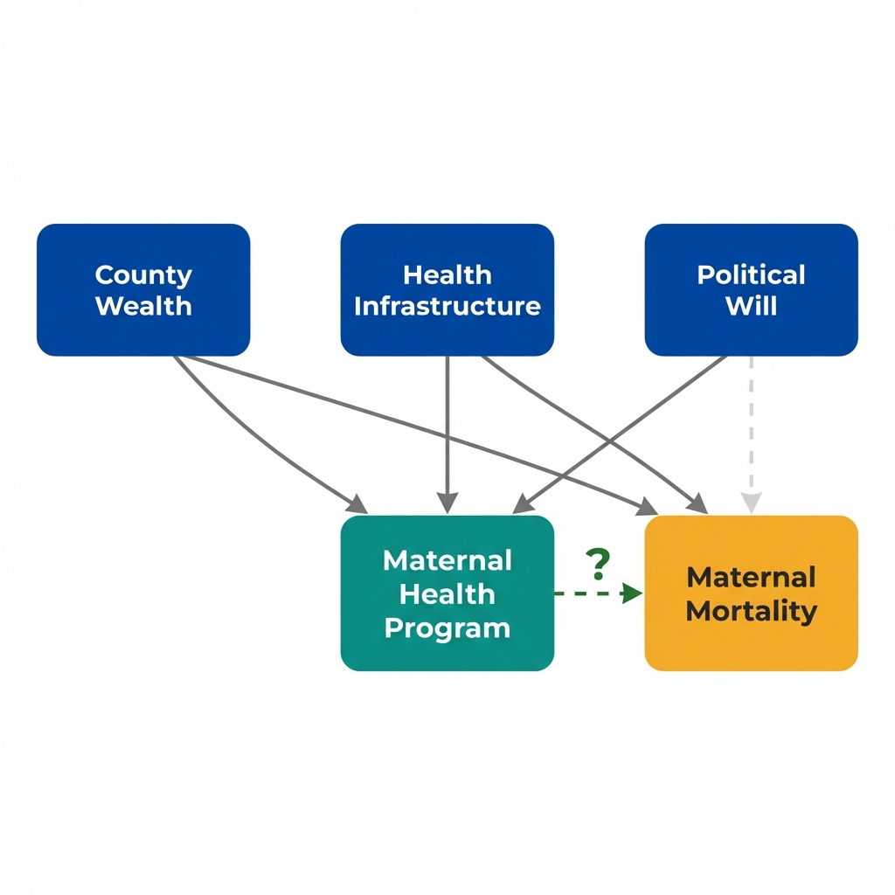

The Data
California counties show different rates of maternal mortality. Some adopted a new maternal health program; others did not. Counties with the program have lower mortality. Is the program working? (Data are simulated for illustration.)
County Wealth vs Maternal Mortality
The crucial question: Is the program reducing mortality, or are certain types of counties more likely to adopt it?
Who Gets Treated?
Economists start by asking: "What determines which units receive treatment?" The answer reveals potential threats to causal inference. If treatment assignment is related to outcomes for reasons other than the treatment itself, simple comparisons will be misleading.

Arrows show potential causal relationships. The dashed arrow is what we want to measure.
Understanding selection: The association between program and outcomes reflects two things mixed together.
How do we separate the causal effect from the selection effect?
Selection Mechanisms
Use the filters below to explore what predicts program adoption. When certain characteristics strongly predict treatment, comparing treated and untreated units becomes problematic.
Selection Into Treatment
Selection into treatment occurs when units that receive treatment differ systematically from those that do not. It creates bias when:
- The same factors that predict treatment also predict outcomes
- Treated units would have different outcomes even without treatment
- The treatment-outcome association reflects both causation and selection
The pattern is clear: Wealthier counties with better infrastructure are far more likely to adopt the program.
What does this mean for interpreting the mortality difference?
Implications
Selection into treatment has profound consequences for policy evaluation. The observed difference between treated and untreated groups tells us little about what would happen if we implemented the program elsewhere.
What the Comparison Actually Captures
| Component | Description | What It Means |
|---|---|---|
| True Program Effect | Lives saved by the program itself | What we want to measure |
| Selection Effect | Advantage from being a county that adopts programs | Wealthier, better-resourced counties would do better anyway |
| Observed Difference | Program Effect + Selection Effect | Overstates the true impact of the program |
Overestimating Program Benefits
If wealthy counties adopt programs and have better outcomes, we may attribute to the program what would have happened anyway.
Misleading Policy Conclusions
Scaling a program to different counties may not replicate the observed benefits if those counties lack the same underlying advantages.
The Counterfactual Problem
We never observe what would have happened to treated counties without treatment. Selection makes this counterfactual especially hard to estimate.
Regression Cannot Fully Adjust
Statistical controls help but cannot eliminate bias from unmeasured factors that predict both adoption and outcomes.
Selection is a fundamental challenge: It does not invalidate observational research, but it demands careful thinking about the treatment assignment mechanism.
What strategies can address selection bias?
Key Insight
Understanding selection is the first step toward credible causal inference. These questions help you think about whether selection threatens your analysis. They do not guarantee valid causal estimates, but they reveal where the analysis is vulnerable.
Questions Economists Ask About Selection
Key Takeaway
Selection into treatment is not a statistical problem with a statistical fix. When units that receive treatment differ systematically from those that do not, simple comparisons confound causation with selection. The solution is not more sophisticated adjustment but finding sources of treatment variation that operate independently of the factors that determine outcomes. Policy mandates, geographic rollouts, and eligibility thresholds can provide this. This is what economists mean by "identification."